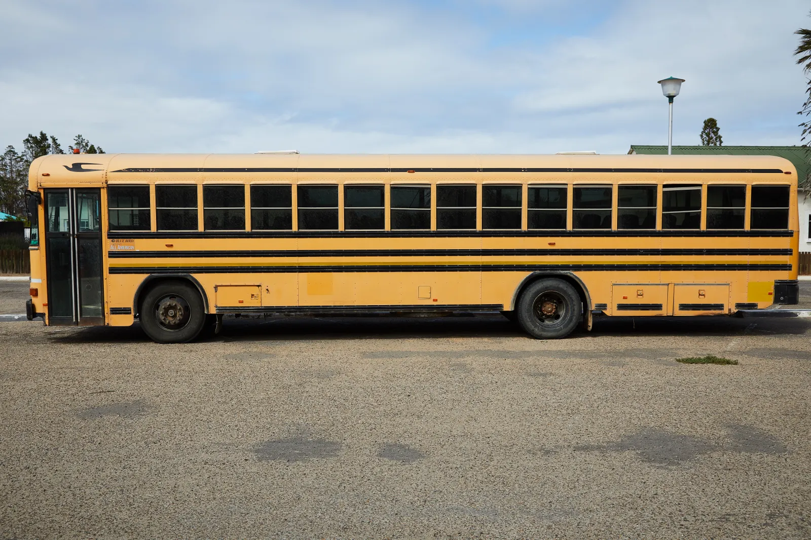

Amber Loop
Lakeside Gate · Cedar Park · Orchard Junction · Northfield Academy
Lakeside & Cedar ParkSearch illustrative coverage, compare stop sequences, and understand the journey before choosing a plan.
Lakeside Gate · Cedar Park · Orchard Junction · Northfield Academy
Lakeside & Cedar ParkMeadow View · Hillcrest Circle · Library Corner · Riverside School
Meadow View & HillcrestMorning arrival shown at 7:38 AM.
Morning arrival shown at 7:52 AM.
Use the map to compare route shapes and stops. Map lines and timings are illustrative rather than live vehicle positions.
First stop 7:05 AM · school arrival 7:38 AM
The sequence runs from Lakeside Gate to Northfield Academy.
School departure 3:45 PM · final stop 4:18 PM
The return follows the stop sequence in reverse.
Actual operating schedules require confirmation by the transport operator and may vary with traffic, school calendars, and service conditions.
Open Route Playback| Route | First stop | School | Duration |
|---|---|---|---|
| ST-12 | 7:05 AM | 7:38 AM | 42 min |
| ST-24 | 7:20 AM | 7:52 AM | 38 min |

Review waiting, boarding, riding, and handover guidance with every student before the first journey.
Read Safety Guidance